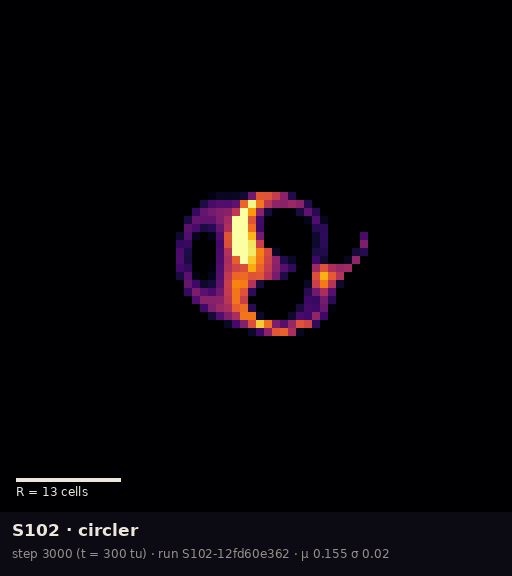
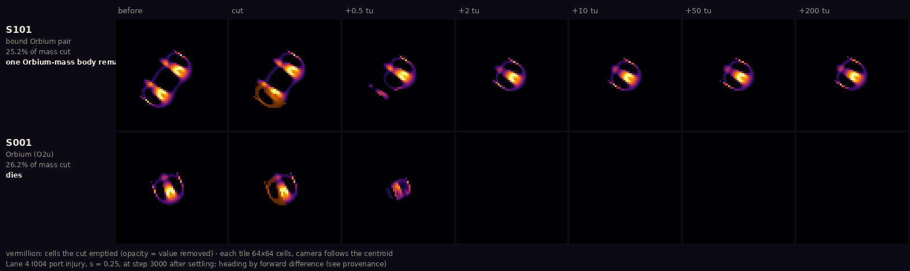

Room 6 · Provisional · S102 and S101
Still being argued
This room is built while the science is still moving. Two Night 1 experiments turned up results that are more interesting than the specimens' first descriptions, and the hostile reviewer has already pushed back on parts of both. What follows is what each lane reports, side by side, with nothing promoted to fact until the ledger says so.
The creature that eventually disappears

Room 4 introduced the circler as one of three animals sharing one rule C038reproduced, and showed that it survives being drawn at finer resolution C047indep. checked. Both statements were measured over at most a few thousand time units. Watched for longer, the circler changes the story.
On the standard grid (R 13), in the field explorer's longer runs, the registered circler stopped circling and died after roughly four thousand time units, and slightly disturbed copies died at very different times, while others were still circling when the runs ended (Lane 6, PR #27).
The hostile reviewer found that copies differing by one part in a trillion drift apart exponentially, and die at times scattered across the whole run, so no single death time belongs to the creature (Lane 7, PR #30).
The replication lane reproduced this exactly on the same grid, with the same death step and the same four early deaths, and 10 of 24 copies nudged by one part in a trillion stopped circling within 5000 time units. But change the numerical setting and none died. On finer grids: 0 of 29 runs at R 26 (watched for 5000 to 8000 time units) and 0 of 3 at R 39. On the same grid with smaller time steps: 0 of 24 copies at T 20 and 0 of 24 at T 40, each watched for 8000 time units. So on this evidence the disappearing belongs to the simulation settings, R 13 with T 10, not to the creature's rule. It does not show that the circler lives forever at any other setting, only that it outlasted these runs (Lane 3, PR #29).
![Four-part figure, marked provisional. Part b carries a red warning that it holds only in a 128-wide world, where the deaths at strength 0.2 are a collision artefact. Parts c and d carry a red warning that they hold only at R 13, T 10, because a replication saw no deaths at a finer grid or a finer timestep. (a) Tiles for port injury: the bound pair above and its two partners run alone below read the same almost everywhere. (b) The same for frontal addition, with a third block for partners given the full pulse; at strengths 0.2 and 0.3 several pair tiles read 0 with red outlines while every lone-partner tile reads 2; at 0.4 the full-pulse partners also die; columns from 0.5 are faded. (c) 37 circler lifelines from time 0: about half end in a red cross between 292 and 3980 time units, the rest run to an arrow at 5000. (d) A stepped survival curve falling to about 0.73 at 1000 time units and 0.46 at 5000, inside a shaded uncertainty band.](../../research/figures/D-pair-and-circler/figure-D.png)
When together is worse
The bound pair S101 is two Orbium bodies sharing one shell. The obvious question is whether the binding helps them.

The field explorer compared the pair with each of its halves run alone. For the side cut, the pair ends exactly as its two halves would on their own, in 58 of 60 runs. For a pulse of extra mass added in front, the pair sometimes dies where each half alone survives (Lane 6, PR #27).
The hostile reviewer re-ran the halves with the full pulse rather than half of it each. The drag-down held at pulse strengths 0.2 and 0.3 and was explained by exposure at 0.4. Its preregistered verdict is inconclusive overall, with a narrower positive observation at 0.2–0.3 only. It advises against reading the stronger-pulse "rescues" and world-filling outcomes as coupling (Lane 7, PR #30).
Then the field explorer found a simpler explanation for most of it. In the standard 128-wide world, a pulse into the gap between the partners splits the pair into two free Orbium, and the deaths at strength 0.2 come later, when those two meet again around the wrap-around world and collide. In a world twice as wide, the same split pairs ended as two living Orbium in all 5 phases tried, an exploratory check. So the 0.2 result is an effect of the small world, and the 0.3 deaths also depend on world size. What may remain is narrower: at 0.3, where exactly the pulse lands seems to matter. That follow-up is not yet proposed (Lane 6, PR #27).
Figure D above sets the two side by side. Panel a is the side cut: the pair ends exactly as its two partners do alone. Panel b is the frontal pulse: the shaded columns at 0.2 and 0.3 are the narrow window where the pair dies while both partners, even given the whole pulse, survive. Stronger pulses are faded because neither baseline settles them. Every run in panel b is in the 128-wide world, and its red warning says so: that window is now much weaker evidence than it looks.